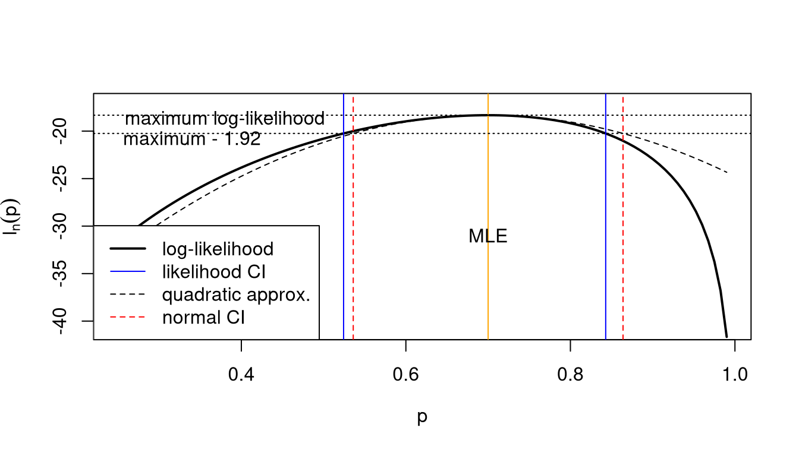

11 Likelihood-based confidence interval and likelihood ratio
11.1 Likelihood-based confidence intervals and Wilks statistic
General idea and definition of Wilks log-likelihood ratio statistic
Instead of relying on the normal resp. quadratic approximation, we can also use the log-likelihood directly to find likelihood confidence intervals (Figure 11.1).
Idea: find all \(\boldsymbol \theta_0\) that have a log-likelihood that is almost as good as \(ell_n(\hat{\boldsymbol \theta}_{ML})\). \[\text{CI}= \{\boldsymbol \theta_0: \ell_n(\hat{\boldsymbol \theta}_{ML}) - \ell_n(\boldsymbol \theta_0 ) \leq \Delta\}\] Here \(\Delta\) is our tolerated deviation from the maximum log-likelihood. We will see below how to determine a suitable \(\Delta\).
The above leads naturally to the Wilks log-likelihood ratio statistic \(W(\boldsymbol \theta_0)\) defined as: \[ \begin{split} W(\boldsymbol \theta_0) & = 2 \log \left(\frac{L(\hat{\boldsymbol \theta}_{ML}| D)}{L(\boldsymbol \theta_0| D)}\right) \\ & =2(\ell_n(\hat{\boldsymbol \theta}_{ML})-\ell_n(\boldsymbol \theta_0))\\ \end{split} \] With its help we can write the likelihood CI as follows: \[\text{CI}= \{\boldsymbol \theta_0: W(\boldsymbol \theta_0) \leq 2 \Delta\}\]
The Wilks statistic is named after Samuel S. Wilks (1906–1964).
Advantages of using a likelihood-based CI:
- not restricted to be symmetric
- enables to construct multivariate CIs for parameter vector easily even in non-normal cases
- contains normal CI as special case
Example 11.1 The likelihood ratio statistic:
As alternative to the Wilks log-likelhood ratio statistic \(W(\boldsymbol \theta_0)\) one may also use the likelihood ratio statistic \[ \Lambda(\boldsymbol \theta_0) = \frac{L(\boldsymbol \theta_0| D)}{L(\hat{\boldsymbol \theta}_{ML}| D)} \] The two statistics can be transformed into each other using \[ W(\boldsymbol \theta_0) = -2\log \Lambda(\boldsymbol \theta_0) \] and \[\Lambda(\boldsymbol \theta_0) = e^{ - W(\boldsymbol \theta_0) / 2 } \] Hence large values of \(W(\boldsymbol \theta_0\) correspond to small values of \(\Lambda(\boldsymbol \theta_0)\) and the other way round.
In this course we will only use \(W(\boldsymbol \theta_0)\) as it is both easier to compute and its sampling distribution is easier to obtain.
Examples of the Wilks log-likelihood ratio statistic
Example 11.2 Wilks statistic for the proportion:
The log-likelihood function for the parameter \(\theta\) is (cf. Example 8.1) \[ \ell_n(\theta) = n ( \bar{x} \log \theta + (1-\bar{x}) \log(1-\theta) ) \] Hence the Wilks statistic is with \(\hat{\theta}_{ML}=\bar{x}\) \[ \begin{split} W(\theta_0) & = 2 ( \ell_n( \hat{\theta}_{ML}) -\ell_n( \theta_0 ) )\\ & = 2 n \left( \bar{x} \log \left( \frac{ \bar{x} }{\theta_0} \right) + (1-\bar{x}) \log \left( \frac{1-\bar{x} }{1-\theta_0} \right) \right) \\ \end{split} \]
Comparing with Example 4.3 we see that in this case the Wilks statistic is essentially (apart from a scale factor \(2n\)) the KL divergence between two Bernoulli distributions: \[ W(\theta_0) =2 n D_{\text{KL}}( \text{Ber}( \hat{\theta}_{ML} ), \text{Ber}(\theta_0) ) \]
Example 11.3 Wilks statistic for the mean parameter of a normal model:
The Wilks statistic is \[ W(\mu_0) = \frac{(\bar{x}-\mu_0)^2}{\sigma^2 / n} \]
See Worksheet L2 for a derivation of the Wilks statistic from the normal log-likelihood function.
Note this is the same as the squared Wald statistic discussed in Example 10.6.
Comparing with Example 4.4 we see that in this case the Wilks statistic is essentially (apart from a scale factor \(2n\)) the KL divergence between two normal distributions with different means and variance equal to \(\sigma^2\): \[ W(p_0) =2 n D_{\text{KL}}( N( \hat{\mu}_{ML}, \sigma^2 ), N(\mu_0, \sigma^2) ) \]
Example 11.4 Wilks log-likelihood ratio statistic for the categorical distribution:
The Wilks log-likelihood ratio is \[ W(\boldsymbol p_0) = 2 \left( \ell_n(\hat{\pi}_1^{ML}, \ldots, \hat{\pi}_{K-1}^{ML} ) - \ell_n(p_1^{0}, \ldots, p_{K-1}^{0} ) \right) \] with \(\boldsymbol p_0 = c(p_1^{0}, \ldots, p_{K}^{0} )^T\). As the probabilities sum up to 1 there are only \(K-1\) free parameters.
The log-likelihood at the MLE is \[ \ell_n(\hat{\pi}_1^{ML}, \ldots, \hat{\pi}_{K-1}^{ML} ) = n \sum_{k=1}^{K} \bar{x}_k \log \hat{\pi}_k^{ML} = n \sum_{k=1}^{K} \bar{x}_k \log \bar{x}_k \] with \(\hat{\pi}_k^{ML} = \frac{n_k}{n} = \bar{x}_k\). Note that here and in the following the sums run from \(1\) to \(K\) where the \(K\)-th component is always computed from the components \(1\) to \(K-1\), as in the previous section. The log-likelihood at \(\boldsymbol p_0\) is \[ \ell_n( p_1^{0}, \ldots, p_{K-1}^{0} ) = n \sum_{k=1}^{K} \bar{x}_k \log p_k^{0} \] so that the Wilks statistic becomes \[ W(\boldsymbol p_0) = 2 n \sum_{k=1}^{K} \bar{x}_k \log\left(\frac{\bar{x}_k}{ p_k^{0}} \right) \] It is asymptotically chi-squared distributed with \(K-1\) degrees of freedom.
Note that for this model the Wilks statistic is equal to the KL divergence \[ W(\boldsymbol p_0) = 2 n D_{\text{KL}}( \text{Cat}(\hat{\boldsymbol \pi}_{ML}), \text{Cat}(\boldsymbol p_0 ) ) \]
The Wilks log-likelihood ratio statistic for the categorical distribution is also known as the \(G\) test statistic where \(\hat{\boldsymbol \pi}_{ML}\) corresponds to the observed frequencies (as observed in data) and \(\boldsymbol p_0\) are the expected frequencies (i.e. hypothesised to be the true frequencies).
Using observed counts \(n_k\) and expected counts \(n_k^{\text{expect}} = n p_k^{0}\) we can write the Wilks statistic respectively the \(G\)-statistic as follows: \[ W(\boldsymbol p_0) = 2 \sum_{k=1}^{K} n_k \log\left(\frac{ n_k }{ n_k^{\text{expect}} } \right) \]
Quadratic approximation of the Wilks statistic
Recall the quadratic approximation of the log-likelihood function \(\ell_n(\boldsymbol \theta_0)\) (= second order Taylor series around the MLE \(\hat{\boldsymbol \theta}_{ML}\)):
\[\ell_n(\boldsymbol \theta_0)\approx \ell_n(\hat{\boldsymbol \theta}_{ML})-\frac{1}{2}(\boldsymbol \theta_0-\hat{\boldsymbol \theta}_{ML})^T \boldsymbol J_n(\hat{\boldsymbol \theta}_{ML}) (\boldsymbol \theta_0-\hat{\boldsymbol \theta}_{ML})\]
With this we can then approximate the Wilks statistic: \[ \begin{split} W(\boldsymbol \theta_0) & = 2(\ell_n(\hat{\boldsymbol \theta}_{ML})-\ell_n(\boldsymbol \theta_0))\\ & \approx (\boldsymbol \theta_0-\hat{\boldsymbol \theta}_{ML})^T \boldsymbol J_n(\hat{\boldsymbol \theta}_{ML})(\boldsymbol \theta_0-\hat{\boldsymbol \theta}_{ML})\\ & =t(\boldsymbol \theta_0)^2 \\ \end{split} \]
Thus the quadratic approximation of the Wilks statistic yields the squared Wald statistic.
Conversely, the Wilks statistic can be understood a generalisation of the squared Wald statistic.
Examples of quadratic approximations
Example 11.5 Quadratic approximation of the Wilks statistic for a proportion (continued from Example 11.2):
The Wilks statistic is \[ W(\theta_0) = 2 n \left( \bar{x} \log \left( \frac{ \bar{x} }{\theta_0} \right) + (1-\bar{x}) \log \left( \frac{1-\bar{x} }{1-\theta_0} \right) \right) \] Computing Taylor series of second order (for \(p_0\) around \(\bar{x}\)) yields the following approximations: \[ \log \left( \frac{ \bar{x} }{p_0} \right) \approx -\frac{p_0-\bar{x}}{\bar{x}} + \frac{ ( p_0-\bar{x} )^2 }{2 \bar{x}^2 } \] and \[ \log \left( \frac{ 1- \bar{x} }{1- p_0} \right) \approx \frac{p_0-\bar{x}}{1-\bar{x}} + \frac{ ( p_0-\bar{x} )^2 }{2 (1-\bar{x})^2 } \] With the above we can approximate the Wilks statistic of the proportion as \[ \begin{split} W(p_0) & \approx 2 n \left( - (p_0-\bar{x}) +\frac{ ( p_0-\bar{x} )^2 }{2 \bar{x} } + (p_0-\bar{x}) + \frac{ ( p_0-\bar{x} )^2 }{2 (1-\bar{x}) } \right) \\ & = n \left( \frac{ ( p_0-\bar{x} )^2 }{ \bar{x} } + \frac{ ( p_0-\bar{x} )^2 }{ (1-\bar{x}) } \right) \\ & = n \left( \frac{ ( p_0-\bar{x} )^2 }{ \bar{x} (1-\bar{x}) } \right) \\ &= t(p_0)^2 \,. \end{split} \] This verifies that the quadratic approximation of the Wilks statistic leads back to the squared Wald statistic of Example 10.5.
Example 11.6 Quadratic approximation of the Wilks statistic for the mean parameter of a normal model (continued from Example 11.3):
The normal log-likelihood is already quadratic in the mean parameter (cf. Example 8.2). Correspondingly, the Wilks statistic is quadratic in the mean parameter as well. Hence in this particular case the quadratic “approximation” is in fact exact and the Wilks statistic and the squared Wald statistic are identical!
Correspondingly, confidence intervals and tests based on the Wilks statistic are identical to those obtained using the Wald statistic.
Example 11.7 Quadratic approximation of the Wilks log-likelihood ratio statistic for the categorical distribution:
Developing the Wilks statistic \(W(\boldsymbol p_0)\) around the MLE \(\hat{\boldsymbol \pi}_{ML}\) yields the squared Wald statistic which for the categorical distribution is the Neyman chi-squared statistic: \[ \begin{split} W(\boldsymbol p_0)& = 2 n D_{\text{KL}}( \text{Cat}(\hat{\boldsymbol \pi}_{ML}), \text{Cat}(\boldsymbol p_0 ) ) \\ & \approx n D_{\text{Neyman}}( \text{Cat}(\hat{\boldsymbol \pi}_{ML}), \text{Cat}(\boldsymbol p_0 ) ) \\ & = \sum_{k=1}^K \frac{(n_k-n_k^{\text{expect}} )^2}{n_k} \\ & = \chi^2_{\text{Neyman}}\\ \end{split} \]
If instead we approximate the KL divergence assuming \(\boldsymbol p_0\) as fixed we arrive at \[ \begin{split} 2 n D_{\text{KL}}( \text{Cat}(\hat{\boldsymbol \pi}_{ML}), \text{Cat}(\boldsymbol p_0 ) ) &\approx n D_{\text{Pearson}}( \text{Cat}(\hat{\boldsymbol \pi}_{ML}), \text{Cat}(\boldsymbol p_0 ) )\\ & = \sum_{k=1}^K \frac{(n_k-n_k^{\text{expect}})^2}{n_k^{\text{expect}}} \\ & = \chi^2_{\text{Pearson}} \end{split} \] which is the well-known Pearson chi-squared statistic (note the expected counts in its denominator).
Distribution of the Wilks statistic
The connection with the squared Wald statistic as quadratic approximation of the Wilks log-likelihood ratio statistic implies that both have asympotically the same distribution.
Hence, under \(\boldsymbol \theta_0\) the Wilks statistic is distributed asymptotically as \[W(\boldsymbol \theta_0) \overset{a}{\sim} \chi^2_d\] where \(d\) is the number of parameters in \(\boldsymbol \theta\), i.e. the dimension of the model.
For scalar \(\theta\) (i.e. single parameter and \(d=1\)) this becomes \[ W(\theta_0) \overset{a}{\sim} \chi^2_1 \]
This fact is known as Wilks’ theorem.
Cutoff values for the likelihood CI
| coverage \(\kappa\) | \(\Delta = \frac{c_{\text{chisq}}}{2}\) |
|---|---|
| 0.9 | 1.35 |
| 0.95 | 1.92 |
| 0.99 | 3.32 |
The asymptotic distribution for \(W\) is useful to choose a suitable \(\Delta\) for the likelihood CI noting that \(2 \Delta = c_{\text{chisq}}\) where \(c_{\text{chisq}}\) is the critical value from Table A.2 for a specified coverage \(\kappa\). This yields Table 11.1 valid for a scalar parameter.
Hence, in order to calibrate the likelihood interval we in effect compare it with a normal confidence interval.
Example 11.8 Likelihood confidence interval for a proportion:
We continue from Example 11.2, and as in Example 10.8 we asssume we have data with \(n = 30\) and \(\bar{x} = 0.7\).
This yields (via numerical root finding) as the 95% likelihood confidence interval the interval \([0.524, 0.843]\). It is similar but not identical to the corresponding asymptotic normal interval \([0.536, 0.864]\) obtained in Example 10.8.
Figure 11.2 illustrates the relationship between the normal CI and the likelihood CI and also shows the role of the quadratic approximation (see also Example 10.1). Note that:
- the normal CI is symmetric around the MLE whereas the likelihood CI is not symmetric
- the normal CI is identical to the likelihood CI when using the quadratic approximation!
Likelihood ratio test (LRT) using Wilks statistic
As in the normal case (with Wald statistic and normal CIs) one can also construct a test using the Wilks statistic:
\[\begin{align*} \begin{array}{ll} H_0: \boldsymbol \theta= \boldsymbol \theta_0\\ H_1: \boldsymbol \theta\neq \boldsymbol \theta_0\\ \end{array} \begin{array}{ll} \text{ True model is } \boldsymbol \theta_0\\ \text{ True model is } \textbf{not } \boldsymbol \theta_0\\ \end{array} \begin{array}{ll} \text{ Null hypothesis}\\ \text{ Alternative hypothesis}\\ \end{array} \end{align*}\]
As test statistic we use the Wilks log likelihood ratio \(W(\boldsymbol \theta_0)\). Extreme values of this test statistic imply evidence against \(H_0\).
Note that the null model is “simple” (= a single parameter value) whereas the alternative model is “composite” (= a set of parameter values).
Remarks:
- The composite alternative \(H_1\) is represented by a single point (the MLE).
- Reject \(H_0\) for large values of \(W(\boldsymbol \theta_0)\)
- under \(H_0\) and for large \(n\) the statistic \(W(\boldsymbol \theta_0)\) is chi-squared distributed, i.e. \(W(\boldsymbol \theta_0) \overset{a}{\sim} \chi^2_d\). This allows to compute critical values (i.e tresholds to declared rejection under a given significance level) and also \(p\)-values corresponding to the observed test statistics.
- Models outside the CI are rejected
- Models inside the CI cannot be rejected, i.e. they can’t be statistically distinguished from the best alternative model.
It can be shown that the likelihood ratio test to compare two simple models is optimal in the sense that for any given specified type I error (=probability of wrongly rejecting \(H_0\), i.e. the significance level) it will maximise the power (=1- type II error, probability of correctly accepting \(H_1\)). This is known as the Neyman-Pearson theorem.
As we have seen previousy, the likelihood-based confidence interval differs from the the confidence interval based on the quadratic / normal approximation. Correspondingly, tests based on the log-likelihood ratio \(W(\boldsymbol \theta_0)\) and on the squared Wald statistic \(t(\theta_0)^2\) will also yield different outcomes (e.g. rejection due to lying outside the confidence interval) even though both test statistics share the same asymptotic distribution and critical values.
Example 11.9 Likelihood test for a proportion:
We continue from Example 11.8 with 95% likelihood confidence interval \([0.524, 0.843]\).
The value \(p_0=0.5\) is outside the CI and hence can be rejected whereas \(p_0=0.8\) is insided the CI and hence cannot be rejected on 5% significance level.
The Wilks statistic for \(p_0=0.5\) and \(p_0=0.8\) takes on the following values:
- \(W(0.5) = 4.94 > 3.84\) hence \(p_0=0.5\) can be rejected.
- \(W(0.8) = 1.69 < 3.84\) hence \(p_0=0.8\) cannot be rejected.
Note that the Wilks statistic at the boundaries of the likelihood confidence interval is equal to the critical value (3.84 corresponding to 5% significance level for a chi-squared distribution with 1 degree of freedom).
Compare also with the normal test for a proportion in Example 10.9.
Origin of likelihood ratio statistic
The likelihood ratio statistic is asymptotically linked to differences in the KL divergences of the two compared models with the underlying true model.
Assume that \(F\) is the true (and unknown) data-generating model and that \(G_{\boldsymbol \theta}\) is a family of models and we would like to compare two candidate models \(G_A\) and \(G_B\) corresponding to parameters \(\boldsymbol \theta_A\) and \(\boldsymbol \theta_B\) on the basis of observed data \(D = \{x_1, \ldots, x_n\}\). The KL divergences \(D_{\text{KL}}(F, G_A)\) and \(D_{\text{KL}}(F, G_B)\) indicate how close each of the models \(G_A\) and \(G_B\) fit the true \(F\). The difference of the two divergences is a way to measure the relative fit of the two models, and can be computed as \[ D_{\text{KL}}(F, G_B)-D_{\text{KL}}(F, G_A) = \text{E}_{F} \log \frac{g(x|\boldsymbol \theta_A )}{g(x| \boldsymbol \theta_B)} \] Replacing \(F\) by the empirical distribution \(\hat{F}_n\) leads to the large sample approximation \[ 2 n (D_{\text{KL}}(F, G_B)-D_{\text{KL}}(F, G_A)) \approx 2 (\ell_n(\boldsymbol \theta_A) - \ell_n(\boldsymbol \theta_B)) \] Hence, the difference in the log-likelihoods provides an estimate of the difference in the KL divergence of the two models involved.
The Wilks log likelihood ratio statistic \[ W(\boldsymbol \theta_0) = 2 ( \ell_n( \hat{\boldsymbol \theta}_{ML} ) - \ell_n(\boldsymbol \theta_0) ) \] thus compares the best-fit distribution with \(\hat{\boldsymbol \theta}_{ML}\) as the parameter to the distribution with parameter \(\boldsymbol \theta_0\).
For exponential families the Wilks statistic can also be written in the form of the KL divergence: \[ W(\boldsymbol \theta_0) = 2n D_{\text{KL}}( P(\hat{\boldsymbol \theta}_{ML}), P(\boldsymbol \theta_0)) \] This has been seen in Example 11.2 and Example 11.3. However, this is not true in general.
11.2 Generalised likelihood ratio test (GLRT)
Also known as maximum likelihood ratio test (MLRT). The Generalised Likelihood Ratio Test (GLRT) works just like the standard likelihood ratio test with the difference that now the null model \(H_0\) is also a composite model.
\[\begin{align*}
\begin{array}{ll}
H_0: \boldsymbol \theta\in \omega_0 \subset \Omega \\
H_1: \boldsymbol \theta\in \Omega \\
\end{array}
\begin{array}{ll}
\text{ True model lies in the restricted space }\\
\text{ True model lies in the unstricted space } \\
\end{array}
\end{align*}\]
Both \(H_0\) and \(H_1\) are now composite hypotheses. \(\Omega\) represents the unrestricted model space with dimension (=number of free parameters) \(d = |\Omega|\). The constrained space \(\omega_0\) has degree of freedom \(d_0 = |\omega_0|\) with \(d_0 < d\). Note that in the standard LRT the set \(\omega_0\) is a simple point with \(d_0=0\) as the null model is a simple distribution. Thus, LRT is contained in GLRT as special case!
The corresponding generalised (log) likelihood ratio statistic is given by \[ \begin{split} W &= 2\log\left(\frac{L(\hat{\theta}_{ML} |D )}{L(\hat{\theta}_{ML}^0 | D )}\right)\\ & = 2 ( \ell_n( \hat{\theta}_{ML} ) - \ell_n( \hat{\theta}_{ML}^0 ) ) \end{split} \] and \[ \Lambda = \frac{\underset{\theta \in \omega_0}{\max}\, L(\theta| D)}{\underset{\theta \in \Omega}{\max}\, L(\theta | D)} \] where \(L(\hat{\theta}_{ML}| D)\) is the maximised likelihood assuming the full model (with full parameter space \(\Omega\)) and \(L(\hat{\theta}_{ML}^0| D)\) is the maximised likelihood for the restricted model (with restricted parameter space \(\omega_0\)). Hence, to compute the GRLT test statistic we need to perform two optimisations, one for the full and another for the restricted model.
Remarks:
- MLE in the restricted model space \(\omega_0\) is taken as a representative of \(H_0\).
- The likelihood is maximised in both numerator and denominator.
- The restricted model is a special case of the full model (i.e. the two models are nested).
- The asymptotic distribution of \(W\) is chi-squared with degree of freedom depending on both \(d\) and \(d_0\):
\[W \overset{a}{\sim} \text{$\chi^2_{d-d_0}$}\]
This result is due to Wilks (1938) 1. Note that it assumes that the true model is contained among the investigated models.
If \(H_0\) is a simple hypothesis (i.e. \(d_0=0\)) then the standard LRT (and corresponding CI) is recovered as special case of the GLRT.
Example 11.10 GLRT example:
Case-control study: (e.g. “healthy” vs. “disease”)
we observe normal data \(D = \{x_1, \ldots, x_n\}\) from two groups with sample size \(n_1\) and \(n_2\) (and \(n=n_1+n_2\)), with two different means \(\mu_1\) and \(\mu_2\) and common variance \(\sigma^2\):
\[x_1,\dots,x_{n_1} \sim N(\mu_1, \sigma^2)\] and \[x_{n_1+1},\dots,x_{n} \sim N(\mu_2, \sigma^2)\]
Question: are the two means \(\mu_1\) and \(\mu_2\) the same in the two groups?
\[\begin{align*} \begin{array}{ll} H_0: \mu_1=\mu_2 \text{ (with variance unknown, i.e. treated as nuisance parameter)} \\ H_1: \mu_1\neq\mu_2\\ \end{array} \end{align*}\]
Restricted and full models:
\(\omega_0\): restricted model with two parameters \(\mu_0\) and \(\sigma^2_0\) (so that \(x_{1},\dots,x_{n} \sim N(\mu_0, \sigma_0^2)\) ).
\(\Omega\): full model with three parameters \(\mu_1, \mu_2, \sigma^2\).
Corresponding log-likelihood functions:
Restricted model \(\omega_0\): \[ \ell_n(\mu_0, \sigma_0^2) = -\frac{n}{2} \log(\sigma_0^2) - \frac{1}{2\sigma_0^2} \sum_{i=1}^n (x_i-\mu_0)^2 \]
Full model \(\Omega\): \[ \begin{split} \ell_n(\mu_1, \mu_2, \sigma^2) & = \left(-\frac{n_1}{2} \log(\sigma^2) - \frac{1}{2\sigma^2} \sum_{i=1}^{n_1} (x_i-\mu_1)^2 \right) + \\ & \phantom{==} \left(-\frac{n_2}{2} \log(\sigma^2) - \frac{1}{2\sigma^2} \sum_{i=n_1+1}^{n} (x_i-\mu_2)^2 \right) \\ &= -\frac{n}{2} \log(\sigma^2) - \frac{1}{2\sigma^2} \left( \sum_{i=1}^{n_1} (x_i-\mu_1)^2 + \sum_{i=n_1+1}^n (x_i-\mu_2)^2 \right) \\ \end{split} \]
Corresponding MLEs:
\[\begin{align*} \begin{array}{ll} \omega_0:\\ \\ \Omega:\\ \\ \end{array} \begin{array}{ll} \hat{\mu}_0 = \frac{1}{n}\sum^n_{i=1}x_i\\ \\ \hat{\mu}_1 = \frac{1}{n_1}\sum^{n_1}_{i=1}x_i\\ \hat{\mu}_2 = \frac{1}{n_2}\sum^{n}_{i=n_1+1}x_i\\ \end{array} \begin{array}{ll} \widehat{\sigma^2_0} = \frac{1}{n}\sum^n_{i=1}(x_i-\hat{\mu}_0)^2\\ \\ \widehat{\sigma^2} = \frac{1}{n}\left\{\sum^{n_1}_{i=1}(x_i-\hat{\mu}_1)^2+\sum^n_{i=n_1+1}(x_i-\hat{\mu}_2)^2\right\}\\ \\ \end{array} \end{align*}\]
Note that the three estimated means are related by \[ \begin{split} \hat{\mu}_0 & = \frac{n_1}{n} \hat{\mu}_1 + \frac{n_2}{n} \hat{\mu}_2 \\ & = \hat{\pi_1} \hat{\mu}_1 +\hat{\pi_2} \hat{\mu}_2 \\ \end{split} \] so the overall mean is the weighted average of the two individual group means.
Moreover, the two estimated variances are related by \[ \widehat{\sigma^2_0} = \hat{\pi_1} \hat{\pi_2} (\hat{\mu}_1 - \hat{\mu}_2)^2 + \widehat{\sigma^2} \] Note that this is an example of variance decomposition, where
- \(\widehat{\sigma^2_0}\) is the estimated total variance,
- \(\hat{\pi_1} \hat{\pi_2} (\hat{\mu}_1 - \hat{\mu}_2)^2\) the estimated between-group (explained) variance, and
- \(\widehat{\sigma^2}\) is the estimated average within-group (unexplained) variance.
For the following we also note that \[ \begin{split} \frac{ \widehat{\sigma^2_0} }{\widehat{\sigma^2}} & = \hat{\pi_1} \hat{\pi_2} \frac{ (\hat{\mu}_1 - \hat{\mu}_2)^2}{\widehat{\sigma^2}} + 1\\ & = \frac{t^2_{\text{ML}}}{n} +1 \\ & = \frac{t^2_{\text{UB}}}{n-2} +1 \\ \end{split} \] where \[ t_{\text{ML}} = \sqrt{n \hat{\pi_1} \hat{\pi_2} } \frac{\hat{\mu}_1-\hat{\mu}_2}{ \widehat{\sigma^2}} \] is the two sample \(t\)-statistic based on the ML variance estimate \(\widehat{\sigma^2}\) and \(t_{\text{UB}} = t_{ML} \sqrt{\frac{n-2}{n}}\) is the conventional two sample \(t\)-statistic based on the unbiased variance estimate \(\widehat{\sigma^2}_{\text{UB}}=\frac{n}{n-2} \widehat{\sigma^2}\) (see Section A.9).
Corresponding maximised log-likelihood:
Restricted model:
\[\ell_n(\hat{\mu}_0,\widehat{\sigma^2_0}) = -\frac{n}{2} \log(\widehat{\sigma^2_0}) -\frac{n}{2} \]
Full model:
\[ \ell_n(\hat{\mu}_1,\hat{\mu}_2,\widehat{\sigma^2} = -\frac{n}{2} \log(\widehat{\sigma^2}) -\frac{n}{2} \]
Likelihood ratio statistic:
\[ \begin{split} W & = 2 \left( \ell_n\left(\hat{\mu}_1,\hat{\mu}_2,\widehat{\sigma^2}\right) - \ell_n \left(\hat{\mu}_0,\widehat{\sigma^2_0}\right) \right) \\ & = n\log\left(\frac{\widehat{\sigma^2_0}}{\widehat{\sigma^2}} \right) \\ & = n\log\left(\frac{t^2_{\text{ML}}}{n}+1\right) \\ & = n\log\left(\frac{t^2_{\text{UB}}}{n-2}+1\right) \\ \end{split} \]
Thus, the log-likelihood ratio statistic \(W\) is a monotonic function (a one-to-one transformation!) of the (squared) two sample \(t\)-statistic!
Asymptotic distribution:
The degree of freedom of the full model is \(d=3\) and that of the constrained model \(d_0=2\) so the generalised log likelihood ratio statistic \(W\) is distributed asymptotically as \(\text{$\chi^2_{1}$}\). Hence, we reject the null model on 5% significance level for all \(W > 3.84\).
Other application of GLRTs
As shown above, the two sample \(t\) statistic can be derived as a likelihood ratio statistic.
More generally, it turns out that many other commonly used familiar statistical tests and test statistics can be interpreted as GLRTs. This shows the wide applicability of this procedure.
Wilks, S. S. 1938. The large-sample distribution of the likelihood ratio for testing composite hypotheses. Ann. Math. Statist. 9:60–62. https://doi.org/10.1214/aoms/1177732360↩︎